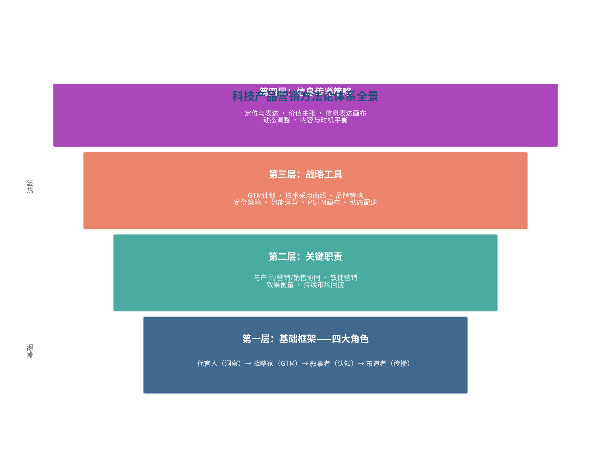
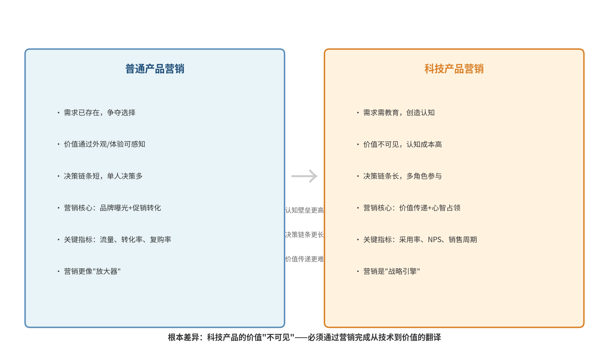
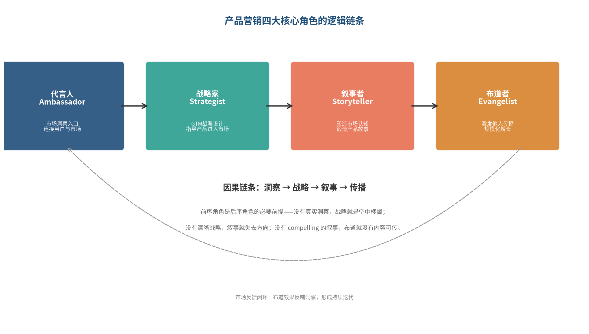

从技术优势到市场统治力的底层逻辑
完成日期： 2026年07月20日
解读对象： 《科技产品营销基本法》（Loved: How to Rethink Marketing for Tech Products）
作者： [美] 玛蒂娜·劳琴科（Martina Lauchengco）
读者定位： 锐捷网络售前工程师 · 目标IT集成商
《科技产品营销基本法》是硅谷产品集团（SVPG）合伙人玛蒂娜·劳琴科基于近30年实战经验的集大成之作，与马蒂·卡根的《启示录》（Inspired）、《赋能》（Empowered）共同构成SVPG产品三部曲——前两本书回答"如何打造用户喜爱的产品"，这本书回答"如何让好产品被看见、被懂得、被热爱"。(豆瓣读书)
本书的核心贡献在于首次系统定义了"产品营销"这一独立职能，并将其从传统营销部门中剥离出来，拆解为代言人、战略家、叙事者、布道者四大核心角色。这四大角色并非并列关系，而是存在严格的因果先后——洞察→战略→叙事→传播，前序角色是后序角色的必要前提。正如作者本人所言："如果你没有前面的基础，后面的就无从谈起。"(Women in Product Podcast)
对售前工程师而言，本书的价值在于：你天然就是前线的产品营销人——你承担着代言人（用户洞察）、叙事者（方案故事）、布道者（客户教育）的多重角色。理解产品营销的完整逻辑链条，能让你从"技术方案的交付者"升级为"价值传递的架构师"，为未来向销售管理或集成商方向发展奠定方法论基础。
本书的前提假设必须首先明确："再伟大的营销也挽救不了糟糕的产品。" (豆瓣读书·短评) 全书建立在"你已经打造出了强大的产品"这一基础之上。如果产品本身站不住脚，任何营销技巧都是空中楼阁。
玛蒂娜·劳琴科的职业生涯本身就是一部硅谷产品营销的进化史。她毕业于斯坦福大学，获政治学学士和组织行为学硕士学位。毕业后直接加入微软，担任Word的产品经理——这是她产品营销理念的起点。(豆瓣读书)
在微软期间，她经历了一个影响深远的关键时刻：Mac版Word的市场表现正在拖累微软的股价，而她作为年轻的产品经理，需要在资源有限、时间紧迫的情况下扭转局面。她没有选择堆砌功能，而是做了一个当时看来非常反直觉的决定——把营销焦点从"150个新功能"缩小到"对日常生产力最重要的几件事"。结果，这个版本成为了当时商业上最成功、评论界评价最高的Word版本。(Mind the Product)
这段经历让她领悟到一个核心道理："产品的感知价值和产品本身同等重要，有时甚至更重要。" 人们不会因为你的产品有多少功能而买单，他们只在乎其中与自己相关的那两三件事。这成为她后来整个产品营销方法论的基石。
离开微软后，她加入了网景（Netscape）——商业互联网浏览器的鼻祖。在网景，她负责Netscape浏览器的产品营销，并领导产品管理团队定义客户端应用及服务器产品线。这是另一段关键经历：她亲历了一个全新品类的创造过程，体会到了"品类创造"与"品类竞争"的本质区别。(豆瓣读书)
此后，她又经历了Loudcloud（后来的Opsware）等创业公司，然后开始从事产品营销咨询，为谷歌、Atlassian等数百家科技公司提供战略咨询。如今，她是硅谷产品集团（SVPG）的合伙人和风险投资公司Costanoa Ventures的合伙人，并在加州大学伯克利分校工程学院研究生院讲授产品营销课程。(伯克利工程学院)
为什么她有资格写这本书？ 因为她的履历覆盖了产品营销的全部维度： - 她在大公司（微软）做过成熟产品的市场份额争夺战（Word从不足50%到全面占领市场） - 她在创业公司（网景）做过新品类的定义和教育 - 她作为顾问服务过数百家不同阶段的科技公司 - 她作为投资人观察过创业公司从诞生到上市或被收购的全过程 - 她作为教育者系统梳理过方法论
这种横跨产品、营销、创业、投资、教育的复合视角，让她的方法论既有实战深度，又有体系广度。
本书开篇就直击痛点——"别让产品'死'在去市场的路上。" (当当网)
这不是危言耸听。在科技行业，我们见过太多"技术很好但卖不动"的产品。Pocket（原Read it Later）与Instapaper的故事就是典型——两个功能类似的"稍后阅读"应用，一个由Tumblr的CTO创建、有硅谷资本背书，另一个由中西部的自学程序员独立开发。最终胜出的却是后者。为什么？答案就在产品营销里。(Blinkist)
Pocket的胜利不是产品的胜利，而是产品营销的胜利：它把自己与Netflix、Dropbox并列，定位为"随时随地"在线服务潮流的一部分；它开放API，让任何应用都能集成，成为行业标准；它分享用户洞察数据（如"保存最多的视频平均时长30分钟"），建立思想领导者形象；最绝妙的是，它把品牌从"Read it Later"改为"Pocket"，一下子从"文章阅读工具"扩展到"保存任何有价值的东西"，可触达市场一夜之间扩大了数倍。(Blinkist)
这个案例揭示了一个残酷的真相："最好的产品仍然可能在市场上失败。为什么？因为它们被产品营销更强的对手击败了。好的产品营销，是'陪跑'产品和'领先'产品的区别。" (Wiley出版社)
这正是本书要解决的核心问题——科技企业"有产品无市场"的终极困境。(豆瓣读书)
在展开讨论之前，必须明确本书的前提假设：
"本书的一个假设前提是，你的公司做出了一个强大的产品。如果你还没做出一个强大的产品，请先阅读马蒂·卡根的《启示录》，该书的重点是帮助你打造一个人们喜爱的产品。如果你已经打造出了一个人们喜爱的产品，请继续阅读本书。" (当当网)
这句话非常重要。它划定了本书的边界——产品营销不是产品力不足的补救方案，而是产品力的放大器和传递者。正如读者在豆瓣短评中所言："你如果忽略了'再伟大的营销也挽救不了糟糕的产品'这句话，那你整本书等于白看。"(豆瓣读书·短评)
在这个前提之下，产品营销的定位就清晰了——它不是锦上添花的"装饰"，而是连接技术与市场的战略引擎。正如书中一针见血指出的："产品营销不是单纯的销售支持，而是连接技术与市场的战略引擎。"(当当网)
这句话对售前工程师尤其有启发意义——你可能从未把自己定位为"营销人"，但你每天做的事情——理解客户需求、设计技术方案、向客户传递价值——本质上就是产品营销的一线实践。理解了产品营销的战略价值，你就能理解自己工作的战略价值。
全书312页，分为五大部分。这五部分不是随意排列的，而是遵循着一条清晰的逻辑主线：从"是什么"到"做什么"，再到"怎么做"，最后到"怎么带"。

这是全书的地基。它回答最根本的问题——产品营销到底是什么？ 作者创造性地将产品营销拆解为四大核心角色：代言人、战略家、叙事者、布道者。这四个角色构成了产品营销的完整功能体系，也定义了这本书的基本框架。
地基打好之后，接下来回答产品营销具体要做哪些事？ 这一部分聚焦跨团队协作——产品营销如何与产品团队、营销部门、销售部门协同作战。同时还涉及敏捷营销、效果衡量等关键流程。
有了角色和职责，还需要工具。这一部分提供了产品营销的"武器库"：GTM计划、技术采用曲线、品牌策略、定价策略、势能运营、PGTM画布、动态配速。每一个工具都是为了解决一个具体的战略问题。
工具之中，信息传递是最核心的"软武器"。这一部分专门展开讲如何锻造直击灵魂的产品故事：定位与表达的关系、价值主张的打造、信息的动态调整、内容与时机的平衡、信息表达画布。
最后是组织和人的问题。产品营销如何随公司发展而进化？ 如何识别优秀的产品营销人才？如何培养全能型管理者？如何根据公司发展阶段和转型方向调整策略？
这条逻辑线可以概括为：认知（是什么）→ 职责（做什么）→ 工具（怎么干）→ 表达（怎么说）→ 领导力（怎么带）。越往下越具体，越往上越抽象。
但这只是从书的结构来看。如果从因果链条来看，四大角色的顺序——代言人→战略家→叙事者→布道者——才是贯穿全书的主线。第三部分的"战略工具"是战略家角色的深化，第四部分的"信息传递策略"是叙事者角色的深化，第二部分的"关键职责"是四大角色的落地保障，第五部分的"领导力"是组织层面的支撑。
理解了这个内在结构，你就不会把这本书当成一堆零散的工具和方法的堆砌，而是能看到一个从市场洞察到市场占领的完整闭环。
要理解科技产品营销为什么难，首先要理解科技产品本身的特殊性。
普通消费品的价值是"可见的"——一件衣服好不好看，穿在身上就知道；一杯奶茶好不好喝，尝一口就知道；一部手机外观漂不漂亮，拿到手里就能判断。消费者可以通过感官直接感知产品的价值。
但科技产品不一样。一款交换机的性能好不好，一个网络架构靠不靠谱，一套AI算力网络解决方案能不能解决问题——这些都无法通过外观或简单体验来判断。客户需要理解技术原理、架构设计、性能参数、兼容性、可扩展性、服务支持等一系列复杂信息，才能评估产品价值。
这就是科技产品营销的第一个根本难题：价值的不可见性。
价值不可见，意味着什么？意味着客户的认知成本极高。一个客户要理解你的产品值不值这个价，可能需要： - 花几个小时听技术讲解 - 阅读几十页的技术白皮书 - 组织多方技术人员进行评估 - 做POC测试验证 - 甚至还要参考行业案例和第三方评测
而普通消费者买一瓶水，决策时间可能只有几秒钟。
认知成本高，直接导致第二个难题：决策链条长。
在B2B科技采购中，很少有一个人就能拍板的情况。通常会涉及： - 使用者：日常操作产品的人，关注易用性和效率 - 技术评估者：负责技术选型的人，关注技术先进性、兼容性、可扩展性 - 管理者：业务部门负责人，关注业务价值和ROI - 决策者：高层领导，关注战略价值、风险和成本 - 采购者：负责商务谈判，关注价格、条款、服务
每个角色的关注点都不一样，你需要用不同的语言、不同的逻辑去说服不同的人。任何一个环节出了问题，项目都可能黄。
这就是科技产品营销的本质困境：价值不可见 → 认知成本高 → 决策链条长 → 营销难度呈指数级上升。

普通产品营销的逻辑是：需求已存在，争夺消费者的选择。市场上已经有很多同类产品，消费者也知道自己需要什么，你的任务是让消费者在众多选择中挑中你。营销的核心是品牌曝光、促销转化、渠道渗透。
科技产品营销的逻辑则完全不同：需求可能尚待唤醒，你需要先创造认知。很多时候，客户甚至不知道自己有这个问题，或者不知道有更好的解决方案。你不仅要让客户选择你，还要先教育客户——为什么这个问题值得解决？为什么你的方案是最优的？为什么现在就要行动？
这是本质的区别。一个是"分蛋糕"，一个是"先做蛋糕再分蛋糕"。
书中用一个经典案例说明了这种差异。在播客工具市场，有好几款产品都说自己是"第一"，而且有四分之三的信息都是"我们是最简单的播客录制工具"。它们都在争夺同一块蛋糕——"谁的工具更好用"。但有一个新进入者换了个思路——它不说自己"更好用"，而是把自己定位为"帮助你讲更好故事的地方"。一下子，它从一个红海中跳了出来，产品还是那个产品，但增长曲线从平线变成了曲棍球杆。(Women in Product Podcast)
这个案例的启示是：科技产品营销的核心不是"我的产品更好"，而是"我们来定义一个新的价值维度"。
为什么会有这种差异？因为在科技领域，产品的功能很容易被复制，参数很容易被超越，但心智中的位置是最难被撼动的。当所有人都在比"谁更好用"的时候，你跳出来说"我们讨论的不是同一个问题"——这就是战略，也是科技产品营销最有魅力的地方。
我们可以从几个维度对比两者的差异：
对售前工程师来说，理解这种差异尤其重要。你可能每天都在做技术交流、方案设计、产品演示，但你有没有意识到——你做的不是"技术说明"，而是价值翻译？你在把不可见的技术价值，翻译成客户能理解、能感知、能认同的业务价值。
这就是产品营销最核心的工作，而你就是一线的产品营销人。
作者在多个场合分享过关于产品采用的三大神话。戳破这些神话，是理解科技产品营销的起点。
这是科技圈最根深蒂固的执念——"只要产品好，自然有人买"。很多技术出身的创始人或产品经理都深信不疑。
但真相是："构建产品的感知，和构建产品本身同等重要，有时甚至更重要。" (Mind the Product)
为什么？因为今天的市场太拥挤了。App Store里有550万个应用，同一品类的产品功能都差不多，说的话也差不多。用户根本没有精力去一个个试用、对比。他们只能通过"感知"来做判断——你的产品给人的第一印象是什么？别人怎么评价你？你解决的问题是不是我关心的？
如果你的产品感知做得不好，用户连了解的兴趣都没有，产品再好也没用。就像一颗被埋没的钻石，它本身很有价值，但没人知道它的存在，它就无法实现价值。
微软Word的例子最能说明问题。当年Mac版Word的开发时间被压缩，团队无法推出很多新功能。如果按照"建好产品就够了"的思维，这个版本肯定失败。但玛蒂娜的团队换了个思路——他们不去比功能数量，而是重新定义"什么是有价值的"。他们告诉用户："我们这次没有加150个新功能，我们只专注于一件事——让你的日常生产力变得更好。"结果，这个功能更少的版本，反而成了当时最成功的版本。(Mind the Product)
这个案例的深层含义是：产品价值不是客观的，而是被构建的。同样的功能，放在不同的叙事框架里，用户感知到的价值完全不同。
很多公司把NPS（净推荐值）当成产品成功的黄金指标，觉得只要NPS上去了，一切都会好起来。
但真相是："你必须在最重要的地方大幅提升NPS，而不是所有地方平均用力。不是产品的所有领域都同等重要。" (Mind the Product)
还是用玛蒂娜在微软的例子。最早的Mac版Word又大又慢，性能问题很严重。但团队不可能修复所有性能问题——时间和资源都有限。那怎么办？他们做了一个判断：谁是最有影响力的传播者？是媒体。 媒体评测Word性能的时候，最常用什么指标？是字数统计功能。因为简单、直观、好对比。
于是，他们做了一个看似"投机取巧"的决定——把字数统计功能的性能优化到"飞快"。其他功能还是慢，但媒体评测的时候，一测字数统计，"哇，太快了"，于是就给了很好的性能评价。这些评价又影响了普通用户的认知，整体口碑就上来了。(Mind the Product)
这个故事听起来有点"鸡贼"，但它揭示了一个深刻的道理：资源永远有限，你必须找到对市场影响最大的那个杠杆点，然后在那个点上集中火力。 平均用力的结果是平庸，集中火力的结果是突破。
对售前工程师来说，这个道理同样适用。做方案的时候，你不可能在所有维度上都碾压对手——价格不一定最低，性能不一定最强，功能不一定最全。但你可以找到客户最关心的那个点，然后在那个点上建立压倒性的认知优势。这就是方案设计的战略思维。
很多产品团队觉得营销是市场部的事，跟自己没关系。产品做好了，交给营销团队去推广就行了。
但真相是："任何人都可以做伟大的产品营销。产品团队中的每个人都必须学会朝这个方向思考——因为做好营销需要扎实的产品营销基础。" (Mind the Product)
为什么？因为产品营销的本质不是"推广技巧"，而是"对市场和用户的理解"。这种理解不是营销部门的专利——产品经理、工程师、售前、销售，只要你在一线跟用户打交道，你就有用户洞察。
书中说："产品营销是一项团队运动。" (Blinkist) 它不是某个部门的事，而是整个组织的能力。产品经理需要懂营销，才能做出市场需要的产品；工程师需要懂营销，才能理解技术的商业价值；售前工程师更需要懂营销，因为你站在客户和产品之间，是价值传递的第一桥梁。
这也是为什么作者说本书"写给所有人，无论他们的头衔是什么"。(当当网) 产品营销不是一种职位，而是一种思维方式——从用户视角看产品、从市场视角看技术、从价值视角看功能。
对售前工程师来说，这一点尤其振奋人心。你不需要转去做营销岗，才能运用产品营销的方法论。你在现有的岗位上，就可以用产品营销的思维来升级你的工作。你的每一次客户交流、每一份方案设计、每一场产品演示，都是产品营销的实践。
这是全书的核心，也是理解整个方法论体系的钥匙。作者将产品营销拆解为四大核心角色：代言人（Ambassador）、战略家（Strategist）、叙事者（Storyteller）、布道者（Evangelist）。
但光知道这四个角色的名字没用，关键是要理解它们之间的逻辑关系和因果链条。这四个角色不是并列的，而是有严格的先后顺序——代言人第一，战略家第二，叙事者第三，布道者第四。

为什么顺序这么重要？作者本人给出了明确的解释：
"这四个基本要素是按这个顺序排列的……原因在于，如果你没有前面的基础，后面的就无从谈起。" (Women in Product Podcast)
这句话是理解整本书方法论的钥匙。很多人做营销，一上来就想"我要写什么文案""我要做什么活动"——这直接跳到了叙事者甚至布道者的角色。但如果代言人的工作没做好（不了解用户和市场），战略家的工作没做好（没有清晰的GTM策略），你写的文案、做的活动就都是无源之水、无本之木。
有读者把这个逻辑链条提炼得很精辟："深度用户洞察 → 差异化定位 → 叙事共鸣 → 全渠道一致性交付 = 市场领先。" (豆瓣读书·短评)
下面我们逐一拆解这四大角色，重点不是"它是什么"，而是"它为什么在这个位置"以及"它和前后角色的关系"。
代言人是四大角色的第一个，也是最基础的一个。它的核心职责是成为产品团队与市场之间的桥梁——把用户的声音、市场的信号传递回组织内部，让产品决策建立在真实的市场现实之上，而不是内部的假设之上。
为什么代言人是第一步？因为没有真实的市场洞察，一切战略都是空中楼阁，一切叙事都是自说自话，一切传播都是自娱自乐。你连用户关心什么都不知道，怎么可能制定出有效的战略？怎么可能讲出打动人心的故事？
这就是因果链条的起点——洞察决定战略，战略决定叙事，叙事决定传播。洞察错了，后面全错。
书中用Workiva的案例说明了代言人角色的价值。Workiva是一家做SEC（美国证券交易委员会）申报工具的公司。有一天，客户成功团队收到反馈——很多用户说希望支持多屏显示。但产品团队觉得这不过是个"锦上添花"的功能，优先级不高。
如果产品营销不扮演好代言人的角色，这个反馈可能就石沉大海了。但客户成功团队坚持推动，最终多屏支持被加入了下一个大版本。结果呢？这个功能成了发布后最受关注、最被讨论的功能。 (Mind the Product)
为什么会这样？因为产品团队是从"功能重要性"的角度判断的——多屏显示不是核心功能。但用户是从"日常体验"的角度感受的——每天对着多个屏幕工作，多屏支持能大幅提升效率和舒适度。
这个案例揭示了代言人角色的本质：你不是在"收集反馈"，你是在"翻译现实"——把用户的真实体验，翻译成产品团队能理解、能重视的语言。
代言人的工作不是偶尔跟用户聊聊天，而是要建立一个持续的市场洞察系统，让市场信号能够源源不断地流入组织内部。这个系统包括：
读到这里，售前工程师应该会心一笑——这不就是你每天在做的事吗？
你在一线跟客户打交道，听客户说需求、说痛点、说担忧；你看竞品的方案，知道对手在做什么；你了解行业的趋势，知道技术在往哪个方向走。你拥有最鲜活、最真实的市场一手信息。
但问题是——你有没有把这些信息系统地传递回公司内部？还是仅仅把它们当成了"做项目的背景知识"？
代言人的角色意识，就是从"被动接收信息"到"主动传递洞察"的转变。你不仅要在项目中运用这些信息来赢得订单，还要把它们提炼成有价值的市场洞察，反哺产品规划和营销策略。这样，你就从一个"项目的执行者"变成了"市场的传感器"，你的价值就不再局限于单个项目，而是扩展到了整个组织。
如果说代言人回答的是"市场是什么样的"，那战略家回答的就是"我们怎么打进去"。
战略家的核心职责是设计和执行产品的GTM（Go-to-Market，进入市场）战略——包括目标客户是谁、价值主张是什么、通过什么渠道触达、定价策略如何、什么时候发布、怎么打第一仗，等等。
为什么战略家在叙事者之前？这是很多人感到困惑的地方。一般人会觉得，先有产品定位和信息传递，然后才有GTM战略。但作者明确指出：
"很多人有时候会感到惊讶——为什么在确定产品的信息传递和定位之前，必须先有战略？因为合适的信息是什么，是由战略决定的。" (Women in Product Podcast)
这个逻辑非常重要，我们来细细拆解一下。
假设你有一个播客工具。如果你的GTM战略是"正面进攻，与领导者正面竞争"，那你的信息传递就应该围绕"我们更好用、更便宜、功能更多"来展开。但如果你的战略是"开辟新战场，定义新品类"，那你的信息传递就完全不一样了——你要讲的不是"更好用"，而是"你需要的根本不是一个录制工具，你需要的是讲故事的能力"。
信息传递是战术，战略是方向。方向错了，战术再精妙也没用。 这就是为什么战略必须在叙事之前。
战略家的思维方式有一个很反直觉的特点——它不是从"做什么"开始，而是从"什么时候做"开始。
作者说：
"通常，产品战略的思考顺序是'什么—如何—为什么—何时'，但GTM战略把'何时'放在第一位，然后是'为什么—什么—如何'。把何时放在第一位，对于如何借市场之势至关重要。" (Mind the Product)
这句话是什么意思？普通的产品思维是：我们要做什么产品（what）→ 怎么做出来（how）→ 为什么做（why）→ 什么时候发布（when）。发布时间是最后才考虑的事，是"做完了就发"。
但GTM思维完全相反：什么时候发布（when）是第一位的——这个时间点有没有市场窗口期？有没有行业事件可以借势？用户的注意力在不在这个方向上？然后才是：为什么要在这个时候发布（why）——借什么势、打什么点；发布什么（what）——在这个时间点，发布哪些内容最有冲击力；怎么发布（how）——通过什么渠道、用什么节奏。
Headspace的案例很经典。他们在5月4日（星战日，May the Fourth）推出了星球大战主题的睡眠音频。这个产品本身可能没什么特别的，但选对了时间，借了星战文化的势，传播效果就非常好。(Mind the Product)
这就是"借市场之势"。好的战略不是闭门造车想出来的，而是敏锐地捕捉市场的时间窗口，然后把产品放进去。
对售前工程师来说，这个思维也很有价值。你做项目的时候，是不是也经常陷入"我有什么产品，就给客户推什么"的惯性？如果换成GTM思维，你会先问——客户现在最关心什么？今年的战略重点是什么？预算周期在什么时候？有没有什么政策或事件可以借势？ 然后再决定推什么、怎么推。
这就是销售里常说的"找风口"，但它的底层逻辑就是GTM的"时间优先"思维。
战略家不是只靠拍脑袋想，而是有一整套工具。本书第三部分全都是战略家的工具： - GTM计划（第13章） - 技术采用曲线（第14章） - 品牌策略（第15章） - 定价策略（第16章） - 势能运营（第17章） - PGTM画布（第18章） - 动态配速（第19章）
这些工具我们会在第四部分详细展开。这里只需要记住：所有这些工具，都是为战略家角色服务的，都是为了回答"我们怎么打进去"这个核心问题。
如果说战略家决定了"我们打哪里、怎么打"，那叙事者就负责"我们说什么、怎么说"——用用户能听懂、能认同的语言，把产品的价值传递出去，在用户心智中建立独特的位置。
叙事者的英文是Storyteller，直译是"讲故事的人"。但作者强调，这不仅仅是"编一个好故事"那么简单。它的真正含义是：塑造人们对产品的感知（shaping how the world thinks about your product）。 (Mind the Product)
这两者的区别是什么？"讲故事"更像是一种包装技巧——给产品套一个动人的外壳。而"塑造感知"是更深层的东西——它改变人们理解产品的框架，改变他们对"什么重要、什么不重要"的认知。
还是用微软Word的例子。当团队把叙事从"150个新功能"改成"专注于你的日常生产力"，他们不是在"包装"产品，而是在重新定义产品价值的评判标准。以前，用户用"功能数量"来评价一个Word版本好不好；现在，用户用"能不能提升日常效率"来评价。评判标准变了，产品的感知价值自然就变了。
这才是叙事者角色的真正威力——不是在既定的赛道上跑得更快，而是重新定义赛道。
叙事者的工作包含两个层面：定位（Positioning）和信息传递（Messaging）。两者的关系是：
"定位是长期游戏，信息传递是短期游戏。两者的成功都需要毅力（找到有效方法）和耐心（在此基础上构建）的结合。" (QRCA Views)
定位是你在用户心智中占据的位置，比如"沃尔沃=安全"、"特斯拉=电动科技"。这个位置一旦建立，就会持续很长时间，不会轻易改变。定位是战略层面的，它回答"我们是谁、我们代表什么"。
信息传递则是你在不同时间、对不同人群说的具体话。你可能这一季度主打"性价比"，下一季度主打"新功能"，对技术用户说"架构先进"，对业务用户说"提升效率"。这些具体的信息传递会变，但它们都应该服务于同一个定位。
用一个比喻来说：定位是你的人格，信息传递是你在不同场合说的话。人格要稳定，不能今天是老实人明天就变狡诈；但说话的方式可以灵活，见什么人说什么话。
如何判断你的信息传递好不好？作者提出了CAST模型——四个字母分别代表：
书中用Expensify早期的slogan作为案例："Expense reports that don't suck! Hassle-free expense reporting built for employees and loved by admins."（"不烂的费用报销！为员工打造、受管理员喜爱的无忧报销。"）(QRCA Views)
这句话为什么好？它很清晰——一看就知道是做报销的；它很真实——"不烂的"（don't suck）这种口语化的表达，一下就抓住了用户对报销工具的普遍吐槽；它很简单——一句话就说清了价值；而且它肯定经过了测试——敢用"不烂的"这种词，是需要勇气的，也一定是验证过的。
对比一下很多科技公司的slogan——"赋能企业数字化转型""引领行业创新"——你就知道为什么那些话没人记得住了：不清晰（到底做什么的？）、不真实（谁都这么说）、不简单（空洞）、多半也没经过测试。
对售前工程师来说，叙事者角色的重要性怎么强调都不为过。
你写的每一份方案、做的每一次演示、讲的每一页PPT，本质上都是在讲故事。你不是在罗列技术参数，而是在讲一个"客户的问题如何被我们的方案解决"的故事。
这个故事讲得好不好，直接决定了客户能不能理解你的方案、认不认同你的价值、愿不愿意买单。
很多售前工程师的问题在于——他们的方案是"功能清单式"的：我们有A功能、B功能、C功能……客户听完的反应是"哦，你们产品功能挺全的"，但不会有"哇，这就是我要的"那种感觉。
用叙事者的思维来做方案，你应该先讲客户的问题和痛点（建立共鸣），再讲我们的方案如何解决这些问题（传递价值），最后用案例和数据证明（建立信任）。整个方案要有一条清晰的逻辑线，而不是一堆功能的堆砌。
这就是方案设计的"叙事思维"——从"我有什么"转到"你需要什么，我能帮你什么"。
布道者是四大角色的最后一个。它的核心职责是赋能他人，让他们成为产品的传播者——不是你自己到处去说产品有多好，而是让用户、合作伙伴、意见领袖、员工都来帮你说。
为什么布道者是最后一步？因为布道需要有东西可"布"。如果代言人的洞察不准，布道就会传错信息；如果战略家的策略不清，布道就会打歪方向；如果叙事者的故事不打动人，布道就没人愿意听。前面三步都做对了，布道才有内容、有底气、有效果。
作者说过一句很深刻的话：
"唯一能在全球规模化增长的方式，就是确保有其他人替你布道。" (Mind the Product)
为什么？因为你自己的声音再大，覆盖面也是有限的。市场部有10个人，就算每个人都很努力，能触达的人群也是有限的。但如果你的用户都帮你说话——一个用户告诉十个朋友，十个朋友再告诉更多人——那传播就是指数级的。
而且，别人说你好话，比你自己说自己好话，可信度高100倍。这是口碑传播的基本原理，但在科技产品领域，它的意义尤其重大——因为科技产品的价值不可见，用户更依赖第三方的评价和推荐。
关于布道者，有一个很重要的洞察，很多人都没意识到：
"他们不会用你那些精心打磨的营销话术。他们会说自己觉得真实、可信的话。" (Mind the Product)
这一点非常关键。很多公司做用户传播，总想让用户"按我们的口径说"——给用户准备好标准话术，让他们照着念。但这样的传播是僵硬的、没有生命力的，一眼就能看出来是"托"。
真正有效的布道，是让用户用他们自己的语言、自己的方式、自己的故事来传播你的产品。你不需要控制他们说什么，你只需要给他们提供素材、创造平台、激发热情。
Splunk的案例就是最好的例子。Splunk Trust是一个由Splunk客户和合作伙伴组成的社区，这些人自发地在各种论坛、会议、社群里分享Splunk的使用经验和心得。他们说的不是Splunk市场部写的标准话术，而是他们自己在工作中踩过的坑、总结的方法、获得的成果。正因为如此，他们的分享才特别有说服力。(Mind the Product)
布道者的工作不是找几个KOL发发广告，而是要建立一个多层次的传播体系：
每一层的布道方式都不一样，但核心原则是一样的：给他们有价值的东西，让他们有动力去传播，然后放手让他们用自己的方式去说。
对售前工程师来说，布道者角色的价值在于——你能不能把一个满意的客户，变成你的"销售助理"？
做完一个项目，客户说"你们的方案不错"——这只是满意。但如果客户愿意在他的行业圈子里推荐你，愿意帮你引见其他客户，愿意在你投标的时候给你做背书——那他就成了你的布道者。
怎么做到？关键在于两点：
第一，让客户真的满意——不仅方案要做好，服务也要跟上，让客户觉得你是真的在帮他解决问题，而不是只想卖东西。
第二，给他传播的"素材"和"由头"——比如项目做得好，可以一起写个案例；客户有行业影响力，可以邀请他在你们的用户大会上分享；客户遇到了新问题，可以一起探索新方案。总之，创造让他"有话可说、有东西可分享"的机会。
在ToB行业，口碑传播的力量是巨大的。一个满意的客户带来的新客户，比你自己跑十次拜访都管用。这就是布道者思维给售前的最大启示——签单不是项目的结束，让客户替你说话才是。
四大角色是"人"的维度，回答"谁来做"；下面我们进入"事"的维度，回答"怎么做"。
本书第三和第四部分提供了一整套产品营销的工具和方法。这些工具不是孤立的，它们分别服务于不同的角色——战略工具体系服务于战略家，信息传递工具体系服务于叙事者。它们共同构成了产品营销的"武器库"。
下面我们逐一拆解这些工具，重点不是讲工具本身怎么用（书里有详细说明），而是讲工具背后的底层逻辑、工具之间的关系、以及什么时候用什么工具。
PGTM是Product Go-to-Market（产品进入市场）的缩写。PGTM画布是一个一页纸的工具，用来对齐产品团队和GTM团队对战略的共识。(SVPG Workshop)
为什么要强调"一页纸"？因为战略最怕复杂。战略一旦变成几十页的文档，就没人看了，也没法对齐。一页纸画布的好处是——所有人都能在同一张图上看到全局，每个人都知道自己的位置和目标。
书中提到一个很重要的概念——"用拼图思维代替线性规划"。(当当网)
什么是线性规划？就是传统的营销计划写法——第一步做什么、第二步做什么、第三步做什么……像流水线一样按顺序推进。
什么是拼图思维？就是把GTM看成一块拼图——有很多碎片（用户洞察、竞争格局、产品优势、渠道、定价、时机……），你需要把它们拼在一起，形成一幅完整的画面。碎片之间没有固定的顺序，你可以从任何一块开始，但最终它们必须严丝合缝地拼成一个整体。
为什么拼图思维更适合科技产品营销？因为科技市场变化太快了，没有人能从一开始就规划好所有步骤。你可能先摸到用户洞察这块碎片，也可能先摸到竞争格局这块碎片，然后慢慢把其他碎片补上来。重要的不是顺序，而是最终的整体一致性——所有碎片都指向同一个战略目标。
PGTM画布就是这张拼图的"底板"。它告诉你一共有哪些碎片需要拼，每个碎片应该放在什么位置，拼出来的整体应该是什么样。
虽然书中没有给出画布的完整模板（需要结合工作坊学习），但从全书的内容来看，PGTM画布至少应该包含以下核心要素：
这些要素不是孤立的，而是相互关联、相互支撑的。比如，定价策略取决于市场定位——你定位高端就不能定低价；GTM路径取决于目标客户——客户在哪你就去哪。
读到拼图思维，售前工程师应该很有共鸣。你做方案设计的时候，不也是在拼图吗？
客户的需求是一块碎片，产品的能力是一块碎片，价格和商务条款是一块碎片，竞争对手的策略是一块碎片……你需要把这些碎片拼在一起，形成一个对客户最有说服力、对公司最有利的方案。
很多售前工程师做方案的方式是"线性"的——先写项目背景，再写需求分析，再写方案设计，再写产品介绍，再写报价……按模板一步步往下填。但真正的高手是"拼图式"的——他先在脑子里把整个方案的战略想清楚：客户最关心什么？我们的优势在哪里？对手的弱点是什么？价格怎么报？然后再把内容组织成文档。
PGTM画布思维，本质上就是"先有战略，再有执行"的思维。 不要上来就写方案，先把方案的战略拼图拼好。
技术采用曲线（Technology Adoption Curve）是营销学的经典理论，由埃弗雷特·罗杰斯在1962年提出。它把用户按照采用新技术的先后顺序，分成五类人：
书中第14章专门讲这个理论，但侧重点不一样——作者关心的不是理论本身，而是如何利用这条曲线，找到你的"超级传播者"。
作者把早期采用者称为"超级传播者"。为什么？因为：
这就是为什么"超级传播者"这么重要——他们不是你的第一批用户，他们是你通往更大市场的钥匙。
那怎么找到这些超级传播者？作者在书中给出了方向：
对售前工程师来说，"超级传播者"的概念可以直接平移到客户关系里。
在客户内部，你是不是也经常遇到这样的人？他可能是某个部门的技术骨干，可能是一个科室的负责人，他很认可你的方案，也愿意在内部帮你说话。他就是你在客户内部的"超级传播者"。
很多项目的成功，不是因为你在外围做了多少工作，而是因为客户内部有这样的人在帮你推动。他了解客户内部的政治、流程、人际关系，知道什么时候该说什么话、该找谁。他说一句，顶你说十句。
所以，售前工程师在项目中要有意识地识别和培养客户内部的"超级传播者"。不要把所有精力都放在最高层决策者身上，也要关注中间层的技术骨干和业务负责人——他们才是真正能帮你把事情推进下去的人。
书中第15章的标题很有意思——"品牌杠杆：它不是你想的那样"。(Wiley出版社)
为什么这么说？因为很多人对品牌的理解很肤浅——品牌就是Logo、广告语、视觉形象。但在科技产品领域，品牌的含义完全不同。
在科技行业，品牌的本质是"承诺"——你向客户承诺，选择了你，就会得到什么。这个承诺不是写在广告里的，而是通过你的产品、服务、内容、每一次客户接触，一点一滴建立起来的。
比如，"思科=稳定可靠"——这不是思科喊出来的，是无数客户用了几十年的设备，体验到它的稳定性之后，形成的共识。再比如，"华为=强力研发+狼性执行"——这也不是营销出来的，是华为几十年如一日的高研发投入和强执行力在客户心中建立的认知。
科技品牌和消费品品牌的建立方式很不一样：
这就是为什么说"品牌杠杆不是你想的那样"——在科技行业，你不能靠砸广告砸出一个品牌。品牌是产品和服务的副产品。产品好、服务好，品牌自然就起来了；产品不行，广告再多也没用。
但这并不意味着产品营销在品牌建设中无事可做。恰恰相反，产品营销在品牌建设中扮演着关键角色——它负责把产品的价值"翻译"成品牌的语言，让客户在使用产品之前，就能通过信息传递感知到品牌的定位和承诺。
我们可以把科技品牌的建设分为三层境界：
大多数科技公司停留在第一层，少数优秀的公司能到第二层，能到第三层的凤毛麟角。
产品营销在每一层都有不同的任务：在第一层，你要清晰地传递产品价值；在第二层，你要通过定位和叙事，抢占品类的心智位置；在第三层，你要构建更宏大的价值叙事，让客户认同你的理念。
对售前工程师来说，品牌不是市场部的事——你自己就是品牌的一个触点。
客户对锐捷品牌的认知，有一部分来自你的一言一行。你专业不专业、靠谱不靠谱、有没有为客户着想，都会直接影响客户对品牌的感知。
一个好的售前，能让客户觉得"锐捷的人很专业，方案很用心"——这就是在为品牌加分。一个差的售前，可能会让客户觉得"锐捷也就那样"——这就是在消耗品牌资产。
所以，不要觉得品牌是虚的。你每次跟客户打交道，都是在建设品牌。
定价可能是产品营销中最被误解的一个领域。很多人觉得定价就是"算成本加利润"——成本100块，我要赚50块，所以卖150块。这叫成本加成定价法，是最省事、也最懒的定价方法。
但作者明确指出：
"定价不是关于生产成本。它关乎人们对产品的感知价值和支付意愿。" (Blinkist)
这句话是定价策略的核心。价格的锚点不是你的成本，而是客户感知到的价值。客户觉得你的产品值多少钱，他才愿意付多少钱。
这就是为什么同样是软件，有的按年费收几万，有的按席位收几块——不是因为成本差异巨大，而是因为客户感知到的价值天差地别。
从书中的内容，我们可以提炼出定价的三个关键原则：
第一，基于价值定价，而非基于成本。
你要先搞清楚，你的产品给客户创造了多少价值——帮他省了多少钱、赚了多少钱、避免了多少风险、提升了多少效率。然后在这个价值里，取一个合理的比例作为你的价格。
一般来说，定价在客户获得的价值的10%-20%之间，是比较容易被接受的。比如你的方案帮客户每年省100万，那你卖10-20万/年，客户会觉得很值——因为ROI很高。
第二，用客户能理解的单位来定价。
作者强调，定价的计量单位要满足几个条件： - 客户心里能算得清账 - 容易衡量 - 采购部门能理解、能和竞品对比 - 产品提供的价值越大，客户付的钱也越多
比如，按用户数定价、按用量定价、按年订阅——这些都是简单易懂、客户能算明白的定价方式。
第三，用"心理账户"影响支付意愿。
书名里提到的"心理账户"是行为经济学的一个概念——人们会把钱放在不同的"心理账户"里，不同账户的花钱意愿是不一样的。
同样是花1000块钱，从"娱乐账户"里花和从"必需品账户"里花，人的心理感受完全不同。定价策略的一个技巧，就是把你的产品放进客户更愿意花钱的那个心理账户里。
比如，一套网络安全设备，如果客户把它放进"IT成本"这个账户，他就会想怎么省钱；但如果客户把它放进"风险防控"这个账户，他就会觉得这钱是"必须花的"，支付意愿就强多了。
对售前工程师来说，定价策略的启示太大了。
很多售前报价，就是拿价格表一算，给客户报个数字。然后客户说"太贵了"，你就打折、申请优惠、跟客户砍价——这完全是错误的方式。
用价值定价的思维，你应该在报价之前，先做一件事——帮客户算清楚价值账。
你要告诉客户：你的方案帮他解决了什么问题、创造了多少价值、避免了多少风险。让客户先建立起"这个东西很值钱"的认知，然后再报价。客户感知到的价值越高，他对价格的敏感度就越低。
比如，你报一套数据中心网络方案，500万。客户说"太贵了"。如果你只是说"我们可以打折"，那就陷入了价格战。但如果你说"这个方案帮您的业务系统可用性从99.9%提升到99.99%，每年减少80小时的停机时间，按您的业务规模，一小时停机损失就是20万，一年就是1600万的损失。我们500万的方案，帮您避免这么大的损失，您觉得值不值？"——这就是价值定价的思路。
报价的顺序很重要：先讲价值，再报价格。 价值讲透了，价格就不是问题；价值没讲透，再便宜客户也觉得贵。
很多公司的营销有一个通病——只有发布新产品的时候才有营销动作。新品期轰轰烈烈地搞一波发布、做一波活动，然后就沉寂了，等到下一个新品再热闹一次。
这种"脉冲式"的营销有很大的问题：客户的注意力是持续的，你不出现，他就会把你忘了；市场的竞争是持续的，你不动，对手就在动。
作者专门用一章讲这个问题——"非产品相关的营销"，也就是势能运营。(Andrew Clark)
势能运营的核心思想是：增长不能只靠新品发布，你需要在非新品期，通过各种方式持续制造势能、保持存在感、推动增长。
书中列举了几种典型的"非产品营销"活动：
这些活动的共同点是——它们都不是围绕"发布新产品"展开的，但都能推动增长。
势能运营的本质，是持续在市场上制造话题和关注点，让客户一直记得你、一直感受到你的存在和进步。
科技行业变化太快了，客户的注意力是稀缺资源。如果你长时间不出现在客户的视野里，客户就会觉得"这家公司是不是不行了""最近没什么动静啊"。而如果你持续有声音——不管是新品、客户案例、技术分享、行业观点——客户就会觉得"这家公司很活跃、很有活力、一直在进步"。
这种"存在感"本身就是一种竞争力。客户在做采购决策的时候，第一个想到的往往是那个"最常听到、最常看到"的品牌，而不是那个"技术最好但没什么声音"的品牌。
对售前工程师来说，势能运营的思路可以用在"客户经营"上。
很多售前的工作方式是"项目驱动"的——有项目的时候忙得团团转，没项目的时候就闲得慌，或者只做内部的事。但真正的高手，在项目空档期也不会闲着——他们会主动经营客户关系。
比如： - 客户最近有什么新动向？行业里有什么新趋势？发个相关的文章或案例过去。 - 上次交流提到的某个技术点，有没有新的进展？整理一下发给客户。 - 公司新出了什么产品或方案，刚好匹配客户的某个潜在需求？找个由头去拜访一下。
这些动作不是为了立刻拿下订单，而是为了保持存在感、维持关系、为下一个项目铺路。这就是售前层面的"势能运营"——你不能只有项目的时候才出现，平时也要持续经营。
很多人学了一套GTM方法论，就想到处套用。但作者指出，产品营销策略不是一成不变的，它必须匹配企业的生命周期和发展阶段。(豆瓣读书)
不同阶段的公司，面临的问题不一样，GTM的重点自然也不一样。用错了阶段，再好的方法论也没用。
我们可以把企业的发展分为三个阶段，每个阶段的产品营销重点都不同：
早期阶段（创业期）：紧密协作，快速学习
早期公司最大的挑战是找到产品市场契合（PMF）。这时候，产品和市场的边界是模糊的，产品团队和GTM团队必须紧密协作，像一个团队一样工作——市场反馈要迅速影响产品决策，产品变化要迅速传递到市场端。
这个阶段的GTM节奏是快速迭代、小步快跑。不要追求完美的计划，要快速试错、快速学习、快速调整。
书中特别强调："在公司早期，产品营销就是公司的GTM战略。" 因为这时候还没有庞大的营销和销售团队，产品营销就是连接产品和市场的全部。
成长阶段（扩张期）：专业化分工，体系化建设
当公司找到了PMF，开始快速增长，这时候就需要专业化分工了——产品经理、产品营销、品牌营销、销售，各司其职。
这个阶段的GTM节奏是体系化、标准化。你需要建立标准的GTM流程、统一的信息传递规范、完善的销售赋能体系。目标是让增长变得可复制、可预测。
但也要注意一个陷阱——分工太细会导致沟通成本上升、响应速度变慢。成长阶段的公司经常会遇到"大公司病"的前兆。
成熟阶段（成熟期）：市场导向，组合管理
成熟公司的产品线多、市场覆盖面广，产品营销的重点从"单个产品的GTM"转向"产品组合的GTM"——怎么让不同产品线之间互相配合、怎么在不同的细分市场采用不同的策略、怎么管理产品生命周期。
这个阶段的GTM节奏是战略驱动、组合管理。你需要站在更高的视角，看整个产品矩阵和市场格局，而不是纠结于单个产品的细节。
书中还专门有一章讲"成熟公司的转折点：何时必须强化产品营销"——当成熟公司遇到增长瓶颈、需要转型或开辟新业务的时候，产品营销的重要性会急剧上升。因为这时候你需要重新理解市场、重新定位产品、重新教育客户——这些都是产品营销的核心工作。
动态配速的思路，对售前工程师也很有启发。一个项目从线索到成交，也有不同的阶段，每个阶段你的工作重点也不一样：
每个阶段的"配速"不一样，你要用的方法和工具也不一样。不要用同一种方式打所有的仗。
与PGTM画布对应，信息表达画布（Messaging Canvas）是叙事者角色的核心工具。它也是一个一页纸工具，用来梳理和对齐产品的信息传递策略。(SVPG Workshop)
为什么需要信息表达画布？因为很多公司的信息传递是混乱的——产品部说一套、市场部说一套、销售说一套、售前说的又不一样。客户听到不同的说法，就会困惑，困惑就不信任，不信任就不买。
信息表达画布的作用，就是让所有人——产品、营销、销售、售前、客服——都用同一个"剧本"说话。不是说每个人都念一模一样的台词，而是说大家的核心信息是一致的、方向是统一的。
信息表达画布通常包含以下要素：
书中有一章专门讲"平衡信息传递的内容与时机"。这是一个很重要但经常被忽视的点。
很多人觉得，信息传递就是"我把所有的优点都告诉客户"。但实际上，信息不是越多越好，而是要在对的时间、说对的话。
每个阶段，客户需要的信息是不一样的。你说早了，他听不进去；说晚了，他已经失去耐心了。
这就是信息传递的节奏感——在正确的时间，用正确的方式，传递正确的信息。
对售前工程师来说，信息表达画布的思路非常实用。
你写的方案、做的PPT，有没有清晰的信息层次？客户翻第一页，能不能立刻get到你最核心的价值？翻前10页，能不能理解你的整体方案和核心优势？看完整个方案，能不能记住关键的差异化和证据点？
很多售前的方案是"平"的——每一页的信息量都差不多，重点不突出。客户看完，什么都没记住。
好的方案应该有"金字塔结构"的信息层次： - 塔尖：一句话说清核心价值（放在首页/封面） - 第二层：三到五个核心优势（放在方案概述里） - 第三层：每个优势的详细说明和证据（放在主体部分） - 第四层：技术细节、参数、配置（放在附录或技术细节章节里）
客户想看多细，就看到哪一层。但无论看到哪一层，核心信息都是一致的、清晰的。
这就是信息表达画布给售前的最大启示——不是把信息都堆给客户，而是有层次、有节奏地传递信息。
敏捷开发已经深入人心了——产品团队用敏捷的方式做开发，快速迭代、持续交付。但营销团队呢？很多公司的营销还停留在"瀑布式"——做一个大方案、拍一个大片子、搞一个大活动，准备半年，上线一周，然后就结束了。
这就产生了一个矛盾：产品在快速迭代，两周一个版本，但营销的节奏跟不上。产品更新了，营销物料还是半年前的；产品的方向调了，营销的策略还没来得及改。
敏捷营销就是为了解决这个矛盾。它的核心思想和敏捷开发一样——用小步快跑代替大爆炸式发布，用持续迭代代替一次性完美。
书中总结了敏捷营销的六大原则：(Andrew Clark)
这些原则的本质是一样的——降低风险、提高速度、用数据说话。
说起来容易做起来难。敏捷营销具体怎么落地？可以从这几个方面入手：
敏捷营销的思路，售前工程师也可以直接借鉴。
你做方案的时候，是不是总想一次做到完美？花很多时间打磨每一个细节，希望第一次交给客户的就是"终稿"。但实际上，客户的需求是在交流中逐渐清晰的，你第一次交的方案，大概率会被改很多次。
与其花两周做一个"完美"的方案，不如花三天做一个"够用"的版本，先给客户看，收集反馈，然后快速迭代。这样既节省时间，又能让客户更早地参与进来，增加他的投入感和认同感。
这就是售前的"敏捷方案"——快速出初稿、快速收反馈、快速迭代。不要追求一步到位，要追求快速对齐。
理论和工具讲了很多，最终还是要落到实践中。下面我们来看三个典型场景，看看产品营销的方法论如何在具体场景中应用。
新产品发布是产品营销最经典的场景——也是最考验功力的场景。很多人觉得发布就是"开个发布会、发篇新闻稿"，但实际上，发布是一个完整的系统工程。
用四大角色的框架来看，新产品发布的完整流程是这样的：
发布之前，核心工作是洞察和战略。
代言人阶段：深度市场调研
在产品还在开发的时候，产品营销就应该介入了。你需要搞清楚： - 目标客户是谁？他们有什么痛点？ - 竞品有哪些？他们的定位和优劣势是什么？ - 市场上有什么趋势和机会？ - 客户对这类产品的认知现状是什么？
这些信息，是后面所有决策的基础。调研不能只在产品做完了才做，那时候已经晚了——很多产品决策已经定了，改不了了。产品营销要在产品定义阶段就介入，用市场洞察影响产品方向。
战略家阶段：制定GTM战略
有了洞察之后，就要制定GTM战略： - 目标市场：先打哪个细分市场？为什么是这个？ - 市场定位：我们在这个市场里是什么位置？ - 价值主张：核心价值是什么？差异化在哪里？ - 发布时机：什么时候发布？有没有什么事件可以借势？ - 定价策略：价格怎么定？包装怎么设计？ - 渠道策略：通过什么渠道触达客户？ - 成功指标：发布成功的标准是什么？用什么指标衡量？
这些问题都想清楚了，才能进入执行阶段。很多公司发布失败，就是因为战略没想清楚就开始做执行——发布会搞了、广告投了，但客户看完不知道你到底解决什么问题、为什么要选你。
发布期的核心工作是信息传递和扩散。
叙事者阶段：锻造核心信息
战略定了之后，就要把战略"翻译"成具体的信息传递： - 核心slogan是什么？ - 给不同角色（技术、业务、决策层）的信息分别是什么？ - 用什么故事来承载这些信息？ - 物料怎么准备（新闻稿、白皮书、产品页、演示视频、案例……）？
信息传递要遵循CAST原则——清晰、真实、简单、经过测试。特别是要测试——发布之前，找几个目标客户测一下，看他们能不能听懂、能不能被打动。
布道者阶段：引爆传播
信息准备好了，就要让更多人看到、听到、说到： - 媒体和分析师：提前做 briefing，让他们理解你的产品和定位，写出来的报道才有深度。 - KOL和意见领袖：让行业专家提前体验产品，他们的评价比你自己说一百句都管用。 - 种子用户：找一批早期用户，让他们先试用、先体验、先分享。他们的真实反馈，是最好的营销素材。 - 内部布道：让公司所有人——从高管到一线员工——都理解产品、会讲产品故事。每个人都是传播节点。
发布不是"发出去就完了"，而是要形成一波传播的势能——从媒体到KOL，从KOL到种子用户，从种子用户到更广泛的市场，一层一层地扩散。
发布不是终点，而是新的起点。发布之后，所有角色的工作还要继续：
这就是一个完整的循环——从市场来，到市场去，不断迭代。
对售前工程师来说，新产品发布的时候，你就是布道者网络中的关键节点。
市场部做的营销是"广撒网"，而你做的是"精准打击"——你直接面对客户，你说的话，客户听得最认真。
所以，新产品发布之后，你要做几件事： - 吃透产品：把新产品的技术、价值、差异化彻底搞明白，不能客户一问三不知。 - 练好话术：把官方的信息传递，转化成你自己的语言、客户的语言。不要照着PPT念，要用客户听得懂的方式讲。 - 找机会讲：在合适的客户那里，找合适的机会，把新产品的信息传递出去。不一定是正式的方案交流，闲聊的时候也可以提一嘴。 - 收集反馈：客户对新产品有什么反应？有什么疑问？有什么兴趣点？把这些反馈传回公司，帮助产品和营销团队迭代。
你就是新产品在一线的"代言人+叙事者+布道者"的结合体。
另一个经典场景是——市场竞争越来越激烈，大家的产品越来越像，价格战越打越凶，怎么突围？
这是科技行业最常见的困境。产品同质化了，功能你有我也有，参数你强我也不差，最后只能拼价格。但拼价格是条死路——利润越拼越薄，公司越做越累。
怎么破？用产品营销的思维，答案是"重新定义赛道"——不在别人的赛道上跟他比，而是换一条赛道，让他没法跟你比。
当所有人都在比"谁的性能更强""谁的价格更低"的时候，你能不能找到一个客户同样关心、但别人没在讲的维度？
比如，大家都在比交换机的带宽和端口密度，你能不能转而讲"运维效率"——你的交换机部署更快、配置更简单、排障更容易，帮客户省人力成本？
再比如，大家都在比AI算力的P数，你能不能转而讲"落地效率"——你的方案部署更快、适配更好、客户能更快把AI用起来、更快产生价值？
竞争的本质，不是在别人的战场上打赢他，而是开辟一个新的战场，让他不得不跟着你走。
这就是战略家角色的核心能力——定义战场，而不是被动应战。
找到了新的维度，接下来要用叙事把这个维度"钉"进客户的脑子里。
怎么钉？有几个方法：
这是叙事者角色的高级玩法——不只是传递价值，更是定义价值的标准。
最后，让更多的人知道、认同、传播这个新的维度。
对售前工程师来说，这个场景太熟悉了。你是不是经常遇到这样的情况——客户拿你和竞品比参数，比来比去，最后比价格。
用差异化突围的思路，你不能跟着客户的节奏走。客户说"A参数你们比竞品低"，你就解释"A参数其实不重要，B参数才是关键，而且我们B参数强"——这还是在别人的赛道上跑。
更高明的做法是换赛道："您说得对，A参数我们确实不是最高的。但根据我们的经验，在您的这个场景里，A参数其实不是瓶颈，真正影响您业务的是C和D。很多客户一开始也只看A，但用了之后才发现C和D才是关键……"
你不是在"辩解"，你是在重新定义"什么是重要的"。当客户认同了你的评价标准，你自然就赢了。
这就是售前的最高境界——不是在客户的选择题里选答案，而是给客户换一张考卷。
第三个场景——产品已经很成熟了，市场也渗透得差不多了，增长遇到了瓶颈，怎么破？
这时候，再做产品层面的营销已经没用了——产品大家都懂，优势劣势都清楚，该买的都买了，没买的也不是因为不知道你。
这时候需要升维——从产品营销升维到品类教育。
品类教育，就是教育市场——告诉客户这个品类的价值、这个品类的趋势、这个品类的最佳实践。你不是在卖自己的产品，你是在"做大蛋糕"——让更多客户认识到这个品类的重要性，让更多预算流向这个品类。
蛋糕做大了，作为品类领导者的你，自然分得最多。
品类教育有几种常见的玩法：
这些动作看起来"不直接产生销售"，但它们的价值是长期的——它们塑造客户的认知、建立行业的标准、巩固你的领导地位。
品类教育，其实就是势能运营的最高级形态。
初级的势能运营，是找各种机会让自己"露脸"；中级的势能运营，是围绕产品制造话题；高级的势能运营，是通过教育品类，建立自己的行业领导地位。
到了这个阶段，你的竞争对手已经不是另一个厂商了，而是"客户的认知"——你要教育客户认识到这个品类的价值，让他们愿意为这个品类花钱。
这就是"布道者"角色的终极形态——不只是布产品的道，更是布品类的道。
对售前工程师来说，当你面对的是成熟产品、成熟客户的时候，你的销售方式也要升级。
你不能再跟客户讲"我们的产品怎么怎么好"——客户都用了好几年了，比你还熟。你要讲的是理念、趋势、方法论——"这个行业正在发生什么变化""未来的技术方向是什么""领先的企业都是怎么做的""您现在的架构有什么潜在的风险""怎么升级才能面向未来"。
当你跟客户聊的不是"买不买我们的产品"，而是"我们一起探讨一下这个行业的未来"的时候，你的层级就完全不一样了。你从一个"卖货的"，变成了一个"值得信赖的顾问"。
这就是售前的高级境界——从卖产品，到卖理念。
理论和方法讲了很多，但知易行难。很多团队在实践产品营销的时候，常常会走入一些误区。下面我们总结最常见的六个误区，并分析为什么会错、以及正确的做法是什么。
误区表现： 一上来就写文案、做海报、拍视频，内容做了一大堆，但回过头来发现——我们到底要打谁、要传达什么核心信息、要达到什么目的？全都不清楚。
为什么会错： 因为做内容是"容易的事"——打开电脑就能写，写完就能发，能立刻看到"产出"。而想战略是"难的事"——要做市场调研、要分析竞品、要做艰难的决策、还要承担判断错误的风险。
人都有避难就易的本能，所以很多团队本能地跳过战略，直接做内容。但这样做的结果是——内容做了一大堆，钱花了不少，效果却很差。因为方向错了，越努力越偏离。
正确做法： 严格按照四大角色的顺序来——先代言人（搞懂市场和用户），再战略家（定清楚GTM策略），再叙事者（做好信息传递），最后布道者（做传播和推广）。
作者反复强调："为什么必须先有战略，再做信息传递？因为合适的信息是什么，是由战略决定的。" (Women in Product Podcast) 这句话值得每个营销人、每个售前工程师反复品味。
对售前来说，这个误区的对应表现是——拿到项目先写方案、先配产品、先报价格，然后再想"客户到底要什么"。正确的做法应该是——先做需求调研（代言人），再定策略（战略家），再写方案（叙事者），最后做交流和推动（布道者）。
反直觉的真相： 前期在战略上多花一倍的时间，后期执行的效率会提升十倍。磨刀不误砍柴工，说的就是这个道理。
误区表现： 产品发布的时候，列了长长的功能清单——"我们这次发布了150个新功能！"觉得功能越多，客户越觉得值。
为什么会错： 因为客户根本记不住150个功能。不仅记不住，反而会困惑——这么多功能，到底哪个是给我的？哪个是解决我的问题的？
微软Word的案例已经说明白了——当你告诉客户"我们有150个新功能"的时候，客户的感知是"你们做了很多，但我不知道跟我有什么关系"。而当你告诉客户"我们只专注于一件事——让你的日常生产力变得更好"的时候，客户反而能清晰地感知到价值。 (Mind the Product)
正确做法： 找到对客户最重要的2-3个价值点，然后把所有的传播火力都集中在这几个点上。少即是多——越聚焦，客户感知越强烈；越分散，客户感知越模糊。
这里面有一个认知心理学的原理——人的工作记忆容量是有限的。你给客户的信息越多，他能记住的反而越少。你只给他一个最强烈的信息点，他反而记得牢。
对售前来说，这个误区对应的是——方案越写越厚，功能越列越多，觉得越详细越专业。但实际上，客户看完几十页的方案，脑子里什么都没记住。好的方案应该是——核心价值一句话说清楚，关键优势三到五点讲明白，技术细节放在附录里供需要的人查。
反直觉的真相： 产品的功能越多，营销的信息越要少。功能复杂的时候，营销的价值就在于"化繁为简"——帮客户从复杂的功能中，提炼出他最关心的那几点。
误区表现： "我们技术这么好，性能比竞品高30%，为什么卖不过人家？一定是销售不给力，或者市场部不会吹。"
为什么会错： 因为技术好是"客观事实"，但客户买的是"感知价值"。客观性能高30%，但客户感知不到，那就等于没有。
Pocket vs Instapaper的案例就是最好的说明——两个产品功能差不多，但Pocket的产品营销做得好，最后赢了。(Blinkist) 这不是说技术不重要，而是说——技术是基础，但光有技术不够，你还得让客户"感知到"技术的价值。
书中那个核心判断说得很到位："构建产品的感知，和构建产品本身同等重要，有时甚至更重要。" (Mind the Product)
正确做法： 像重视产品研发一样重视产品营销。把产品营销当成产品的一部分——不是产品做完了再想怎么卖，而是在做产品的时候就想清楚怎么卖、卖给谁、说什么。
对售前来说，这个误区对应的是——"我技术讲得这么清楚，参数都对得上，客户为什么不选我？"因为客户买的不是参数，是参数背后的价值。你讲了一堆技术参数，但没有翻译成客户能理解的业务价值，客户就感知不到。
反直觉的真相： 在科技行业，"酒香不怕巷子深"是错的。酒香也怕巷子深——巷子太深，客户根本闻不到。你的任务就是把巷子打开，让酒香飘出去。
误区表现： 产品团队做产品，营销团队做营销，各干各的。产品团队觉得营销不懂技术、瞎忽悠；营销团队觉得产品不懂市场、自嗨。
为什么会错： 因为产品营销的本质，就是连接产品和市场。如果产品和营销之间是脱节的，那这个连接就断了。
书中强调："产品营销是一项团队运动。" (Blinkist) 它不是某一个部门的事，而是整个组织的事。产品团队不懂市场，做出来的产品就会自嗨；营销团队不懂产品，做出来的营销就会空洞。
正确做法： 建立产品和营销之间的紧密协作机制。产品团队在做产品规划的时候，就要有产品营销的参与；营销团队在做传播的时候，也要有产品团队的支持。
最好的状态是——产品团队有营销思维，营销团队有产品思维。 产品经理知道做出来的东西怎么卖，营销经理知道卖的东西是怎么做出来的。
对售前来说，这个误区对应的是——"产品部出什么我就卖什么，市场部说什么我就讲什么。"但实际上，你站在产品和客户的中间，你是最懂产品又最懂客户的人。你应该主动把客户的声音传递给产品，把产品的价值传递给客户。你就是那个"连接者"。
反直觉的真相： 最好的产品营销，不是营销部门做出来的，而是产品和营销通力合作的结果。
误区表现： 产品一会儿说自己是"高端专业的"，一会儿说自己是"简单易用的"；一会儿主打"性能最强"，一会儿主打"价格最低"。客户看完一脸懵——你到底是什么？
为什么会错： 因为什么都想抓，什么客户都想做。看到竞争对手打"性价比"，你也想做性价比；看到别人打"高端"，你也想做高端。最后定位就漂了，客户记不住你到底是谁。
定位就像钉钉子——你得朝一个方向使劲，才能钉进去。东敲一下西敲一下，永远钉不进去。
正确做法： 坚持一个核心定位，长期不变。所有的信息传递、所有的营销活动，都要围绕这个定位来。
当然，这不意味着信息传递不能变。定位是长期的、稳定的，但信息传递可以根据不同的时间、不同的人群灵活调整。就像一个人的人格是稳定的，但他在不同的场合说不同的话——在家里跟家人说的话，跟在公司跟同事说的话，肯定不一样，但他还是同一个人。
书中说得好："定位是长期游戏，信息传递是短期游戏。" (QRCA Views) 两者的关系要搞清楚。
对售前来说，这个误区对应的是——为了拿下项目，什么好听说什么。客户想要便宜，你就说我们性价比高；客户想要技术先进，你就说我们技术最强；客户想要服务好，你就说我们服务最棒。结果什么都说了，客户反而不信任你——因为你什么都能，等于什么都不精。
反直觉的真相： 敢于说"我们不做什么"，反而会让客户更信任你。有所不为，才能有所为。
误区表现： 把发布当成营销的终点。发布会开完了、新闻稿发了、广告投了，然后就——结束了。团队解散，各回各家，等下一个产品发布再说。
为什么会错： 因为发布只是开始，不是结束。
作者说过一句很经典的话："'发布'只是这场博弈的开端。真正的营销是贯穿产品全生命周期的价值对齐。" (豆瓣读书·短评)
发布只是把产品推到了市场面前，但客户要不要买、用了满不满意、会不会推荐给别人——这些都是发布之后的事，而且更重要。
正确做法： 把营销的注意力从"发布前"转移到"发布后"。发布前的工作很重要，但发布后的持续运营更重要。持续收集反馈、持续优化信息、持续制造势能、持续培养布道者——这些才是长期增长的关键。
对售前来说，这个误区对应的是——"项目签了就完了，我就不管了，交给交付和售后"。但实际上，签单只是客户关系的开始。项目交付得好不好、客户用得满不满意、有没有新的需求、会不会推荐给别人——这些都影响你后续的生意。
最好的售前，不是签完单就消失，而是会持续经营客户关系——项目做完了，偶尔还去看看客户，问问用得怎么样，有没有什么新需求。这样，下一个项目，客户第一个想到的还是你。
反直觉的真相： 80%的新业务来自老客户。维护好一个老客户，比开发十个新客户都管用。
特别说明： 本部分是专门为锐捷网络售前工程师打造的落地指南。前面的所有内容，都是为这一部分做铺垫。当你理解了产品营销的完整逻辑体系，你才能真正把这些方法用在你的日常工作中。
售前工程师这个岗位，天然就是产品营销的一线实践者。只是很多人没有意识到——你每天做的需求调研、方案设计、技术交流、客户演示，本质上都是产品营销的工作。你不是"技术支持"，你是前线的产品营销人。
这一章，我们就把书中的方法论，彻底落地到售前的日常工作中。
很多售前工程师对自己的定位是"技术支持"——销售拿了项目过来，我负责出方案、做技术交流、回答客户的技术问题。这是一种被动的、从属的定位。
但如果用产品营销的视角来看，售前的角色要主动得多、重要得多。你同时承担着四大角色中的三个半：
看到了吗？你不只是一个"技术支持"，你是集三大角色于一身的一线产品营销人。你的工作质量，直接决定了产品在市场上的表现。
那售前工作的本质到底是什么？
不是"出方案"——出方案是手段，不是目的。 不是"做技术交流"——技术交流是形式，不是本质。 不是"回答客户问题"——回答问题是动作，不是核心。
售前工作的本质，是价值翻译。
你把公司的技术语言，翻译成客户的业务语言；你把产品的功能参数，翻译成客户能感知的价值；你把冷冰冰的设备和方案，翻译成有温度的、能解决客户问题的故事。
这就是产品营销最核心的工作——连接技术与市场，翻译价值，建立认知。
作者说："产品营销不是单纯的销售支持，而是连接技术与市场的战略引擎。" (当当网)
这句话放在售前身上，再贴切不过了。你不是销售的"技术助理"，你是连接技术与市场的战略枢纽。没有你，技术就只是实验室里的技术，变不成客户口袋里的订单。
理解了这一点，你对自己工作的认知就要升级：
当你完成了这个认知升级，你就从一个"执行者"变成了一个"价值架构师"——你不是在交付一份方案，你是在架构一套价值体系，让客户愿意为它买单。
方案设计是售前的核心工作之一。但很多方案，说穿了就是"产品功能列表+网络拓扑图+报价"。客户看完的反应是"哦，挺全的"，但不会有"哇，这就是我要的"那种感觉。
怎么用产品营销的思维升级你的方案设计？核心就是一句话：从功能列表思维，转向价值叙事思维。
每一份方案，都应该有一个清晰的核心价值主张——一句话说清楚，这份方案给客户带来的最核心价值是什么。
很多方案没有核心价值主张，或者核心价值主张很模糊——"为客户提供先进、可靠、安全的网络解决方案"。这不是价值主张，这是废话。哪个厂商不说自己先进可靠安全？
一个好的价值主张，应该包含三个要素： - 目标客户的痛点：你针对的是什么问题？ - 我们的解决方案：我们怎么解决？ - 差异化的价值：我们为什么比别人好？
举个例子： - 不好的价值主张："锐捷AI算力网络解决方案，为AI大模型训练提供高性能网络支撑。"（说了等于没说） - 好的价值主张："针对AI大模型训练中'GPU等网络'的核心痛点，锐捷AI算力网络方案通过自研拥塞控制算法，将训练效率提升30%以上，让每一张GPU都不再空转。"（有痛点、有方案、有价值）
用书中的CAST模型检验一下——Clear吗？清晰，一看就知道解决什么问题。Authentic吗？真实，"GPU等网络"是客户的真实痛点。Simple吗？简单，一句话就说清楚了。Tested吗？如果有数据和案例支撑，就是经过验证的。
核心价值主张就是方案的"魂"。整个方案都应该围绕这个"魂"来组织。 没有"魂"的方案，就是一堆材料的堆砌，没有生命力。
有了"魂"，接下来是"形"——方案的结构怎么安排。
很多方案的结构是标准模板：项目背景→需求分析→方案设计→产品介绍→报价清单。这个结构不能说有错，但它是"厂商视角"的结构——我有什么，我就给你看什么。
如果换成"客户视角"的叙事结构，应该是这样的：
目的：引发共鸣，让客户觉得"你懂我"
价值篇：我们能帮你解决什么？
目的：建立期待，让客户觉得"这就是我要的"
方案篇：我们怎么做到的？
目的：建立信任，让客户觉得"你们真的懂"
证明篇：为什么相信我们？
目的：消除顾虑，让客户觉得"选你们靠谱"
行动篇：接下来怎么做？
这个结构的逻辑是——先让客户认同问题，再让他认同价值，再让他相信方案，最后让他采取行动。这是一个层层递进的叙事结构，比上来就讲"我们有什么产品"说服力强得多。
报价是方案的临门一脚。但很多售前报价的方式是——拿价格表一算，数字填进去，完事。客户说贵，就打折。这是最被动的报价方式。
用价值定价的思维，你应该在报价之前，先把"价值账"给客户算清楚。
怎么做？
第一，价值前置。 在方案的前半部分，就把价值讲透——这个方案帮客户解决什么问题、创造什么价值、避免什么风险、提升多少效率。越具体越好，最好有量化的数字。
比如："这个方案能帮助您的AI训练效率提升30%，按您现有200张GPU的规模，相当于多出60张GPU的算力，一年节省几千万的硬件投资。"
等客户认同了这个价值，你再报价。客户心里就会有一个对比——"这个方案值几千万，现在只要几百万，太值了。"
第二，锚定对比。 给客户一个高价值的"锚点"，让他觉得你的价格不贵。
比如，不要只说"我们的方案500万"，而是说——"如果您自己从头搭建这样一套网络，需要投入多少硬件、多少人力、多少时间，算下来至少要800万，而且要半年才能上线。而我们的整体方案只要500万，一个月就能交付。"
有了对比，客户就不觉得贵了。
第三，分层次报价。 不要只给一个总价，要给客户选择——基础版、标准版、旗舰版，不同档次不同价格。
这样做有几个好处：一是客户有选择感，不会觉得"只能买这个"；二是你可以引导客户往你最想推的档次走；三是客户砍价的时候，你可以从"降配置"入手，而不是直接降价。
记住：客户买的不是价格，是性价比。你要做的不是降低价格，而是提升客户感知到的价值。
写完方案之后，用CAST模型自检一下：
过了CAST这四关，你的方案才真正具备"杀伤力"。
技术交流是售前的另一个核心工作。很多售前工程师做交流，就是把方案从头到尾念一遍，客户有问题就回答，没问题就结束。这是最低效的交流方式。
用产品营销的思维，客户交流应该是一场"价值对话"——不是你单向灌输，而是你和客户双向互动，共同探索问题、构建价值。
代言人角色的核心能力，是洞察——听懂客户没说出来的话、看到客户自己都没意识到的需求。
怎么做到？核心是"提问-倾听-验证"的循环。
提问： 不要上来就讲。先问问题。问什么？
提问的目的，是让客户自己把问题说出来。客户自己说出来的问题，比你讲一百遍都管用。
倾听： 提问之后，认真听。不只是听内容，更要听"言外之意"。
好的售前，80%的时间在听，20%的时间在说。
验证： 听完之后，要用自己的话总结一下，跟客户确认："我理解一下，您目前最大的挑战是A，其次是B，对吗？"
验证有两个好处：一是确保你真的听懂了，不会理解错；二是让客户觉得"你认真听了，而且听懂了"——信任就是这么建立起来的。
最高级的售前，不是最能讲的，而是最会听的。 因为你听得越懂，你讲的就越准，客户就越信服。
轮到你讲的时候，怎么讲才能打动人？
核心原则是：不要讲"我们的技术怎么样"，要讲"你的问题怎么被解决"。
很多售前讲解的逻辑是："我们的产品有A功能、B技术、C特性、D参数……"这是"产品视角"的讲法。
客户视角的讲法应该是："您刚才说的那个问题（回顾痛点），我们是这么解决的——（讲方案）。这样做的好处是（讲价值）。之前XX客户跟您情况差不多，用了我们的方案之后（讲案例）。"
对比一下： - 技术视角："我们的交换机支持RoCEv2，支持PFC、ECN，端到端时延1微秒。" - 客户视角："您AI训练的时候，是不是经常遇到因为网络拥塞导致GPU利用率上不去的问题？我们的方案通过端到端的拥塞控制，能把GPU利用率从50%提升到80%以上。像XX客户，200卡的集群，之前训练一个模型要30天，用了我们的方案之后，只要20天，效率提升了三分之一。"
哪个更打动人？答案不言自明。
你讲的不是技术，是客户的故事——一个"他的问题被你的方案解决了"的故事。
还有几个小技巧：
布道者的核心，是让客户成为你的传播者。在项目层面，就是让客户内部的支持者，愿意帮你在内部推动。
怎么做到？
第一，给他"弹药"。
客户内部的支持者，要帮你说话，他需要"弹药"——能说服他领导和同事的材料。
你要主动给他准备好： - 精简版的方案亮点（一页纸，他转发给领导就能看明白） - 典型客户案例（同行业的最好，他可以说"XX都在用"） - 关键技术的对比分析（面对技术质疑的时候能用） - ROI分析（面对财务和决策层的时候能用）
你给他准备得越充分，他帮你说话就越有底气。
第二，给他"台阶"。
客户帮你说话，不能显得他"胳膊肘往外拐"。你要给他合理的"理由"——为什么选择你，是从公司利益出发的，而不是因为跟你关系好。
比如，你可以帮他做一个"客观的对比分析"——把你和主要竞品的优劣势都列出来，但关键维度上你明显占优。他拿着这个分析去内部汇报，看起来是他"客观分析"的结果，实际上方向已经被你引导了。
第三，给他"成就感"。
每个人都有"好为人师"的一面。当客户给你提了一个建议、指出了一个问题，你要真诚地感谢他，告诉他"您这个建议太有价值了，我们马上改"。甚至可以在方案的某个地方，说是"根据客户的建议优化的"。
这样，客户会有成就感和参与感——这个方案里，也有他的智慧和贡献。他自然就会更愿意这个方案能成。
最好的项目，不是你一个人在战斗，而是客户内部有人帮你一起打。
在客户内部，不同的人对新技术的接受度是不一样的。用技术采用曲线来分类：
很多售前的错误是——把精力都花在说服最保守的那些人身上，想"搞定所有人"。但实际上，你应该把80%的精力放在"早期采用者"身上——他们才是你的"超级传播者"。
先搞定这些人，让他们成为你的支持者和布道者，然后通过他们去影响和说服更多人。不要试图一下子搞定所有人，要找突破口，从最容易的地方切入，再慢慢扩大战果。
找对人，比说对话更重要。
你说你的目标是成为IT集成商。那从售前到销售、再到自己做集成商，需要跨越哪些能力鸿沟？产品营销的方法论，能帮你做什么？
很多优秀的售前转销售，一开始会不适应。为什么？因为售前的工作是"给定目标，想办法实现"——销售说要打这个项目，你就出方案、做交流，想办法赢。你不用考虑"这个项目值不值得打""我们的目标市场对不对""我们的策略是什么"这些问题。
但销售要考虑这些。销售不仅要"赢单"，还要"选对单"——哪些项目该打、哪些不该打、哪些要重兵投入、哪些试试水就行。这就是战略家的能力。
你看，售前已经天然具备了代言人（洞察客户）、叙事者（方案交流）、布道者（客户推动）的能力，缺的就是战略家（定策略、选方向）的能力。补上这一块，你就是一个优秀的销售。
怎么补？
从售前到销售的跨越，本质上是从"做事"到"做局"的跨越——从把事情做好，到选对事情来做。
如果你的目标是自己做集成商，那你需要的能力就更全面了。
做厂商的售前或销售，你背靠的是整个公司——产品是现成的、品牌是现成的、技术支持是现成的。你只需要做好你那一块。
但自己做集成商，你就是"老板"了——产品要你选、客户要你找、方案要你做、交付要你管、钱要你收。所有事情都要你操心。
这时候，你需要的就是完整的产品营销能力——四大角色的能力，你都得有：
做集成商的本质，就是做一个"一人的产品营销部"——所有的事情，你都得懂一点，关键的事情，你都得能扛。
最后，给你三个具体的建议：
建议一：从现在开始，就用"老板心态"做售前。
不要觉得"我只是个打工的"，公司的战略跟我没关系。你要把每一个项目，都当成"自己的生意"来做——这个项目能不能成、能赚多少钱、投入多少人力、值不值得、下一步怎么走——都像经营自己的公司一样去思考。
这种思维方式，比任何技能都重要。当你用老板的心态做事，你学到的东西、积累的经验，都是你自己的。等到你真的出来做的时候，你已经"实习"了很多年了。
建议二：积累自己的"三件资产"。
做集成商，靠的不是某个产品，而是你的资产： - 客户资产： 有多少客户信任你、愿意跟你合作。这是你的饭碗。 - 技术资产： 你的技术能力、方案能力、交付能力。这是你的底气。 - 人脉资产： 厂商的人、同行的人、行业里的人。这是你的杠杆。
做售前的时候，不要只盯着KPI。要有意识地积累这三样东西——多认识几个客户、多学几门技术、多交几个行业朋友。这些，都是你未来自己干的本钱。
建议三：先从"小生意"开始练手。
不用等"准备好了"再出来。可以先从一些小项目、小单子开始练手——帮朋友出出方案、介绍介绍生意、做点小项目。在做的过程中，你会发现自己缺什么、哪里不行，然后再补。
创业不是准备好了才上路，而是上了路才慢慢准备好。
读完整本书，你可能会发现——产品营销好像不是某个具体的"技能"，而是一种思维方式。
这种思维方式的核心是什么？
是"从外往里看"——从客户的视角、市场的视角，倒过来看产品、看技术、看自己。
我们做技术出身的人，很容易"从里往外看"——我有什么技术、我有什么功能、我有什么优势，然后想办法把它们"推"给客户。
但产品营销的思维是反过来的——客户有什么问题、市场有什么机会、客户关心什么、在意什么，然后倒过来想，我们应该怎么做、怎么说、怎么打。
这是一个根本性的视角转换。
当你完成了这个转换，你看客户、看项目、看产品、看自己，都会不一样。
这，就是这本书给你的最大礼物——不只是一些工具和方法，更是一套全新的思维方式。
最后，用书中的一句话收尾：
"做好产品营销工作离不开优秀人才，但实际上，任何有能力和思想的人都可以做产品营销。" (当当网)
你已经有了技术能力，有了一线经验，有了客户洞察——缺的，只是这套方法论和这个思维方式。
现在，它来了。
全书解读完。
主要参考来源： - 《科技产品营销基本法》玛蒂娜·劳琴科 著，浙江科学技术出版社，2026年4月 - 《Loved: How to Rethink Marketing for Tech Products》Martina Lauchengco, Wiley - Women in Product Podcast Episode 28 访谈实录 - Mind the Product 2022 大会演讲 - 豆瓣读书书籍信息及读者评论